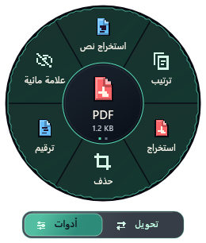
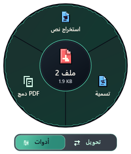

صور فعلية من محرر WPF التجريبي، بحجم عرض 100%، وليست محررًا يعمل داخل المتصفح. الوظائف الحقيقية موجودة في نسخة التطوير. هذه المعاينة لا تثبت تجربة سحب فعلية من Explorer.

تسجيل أدوات PDF في نفس العجلة · 260 × 306 DIP
عدة مستندات: دمج + النص والتسمية الموجودانالتصميم النهائي والتنقل داخل المحرر بانتظار موافقتك. معاينة العجلة المعتمدة تبقى منفصلة.